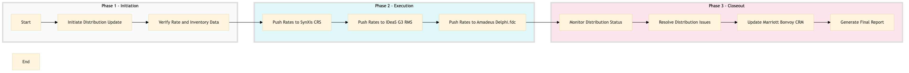

| Role | Steps |
|---|---|
| Revenue Manager | 1.1 1.2 2.1 2.2 2.3 3.1 3.2 3.3 3.4 |
| Step | Name | Role | System | Input | Output | KPI | Dec? | Exc? | Pain Point / Risk |
|---|---|---|---|---|---|---|---|---|---|
| 1.1 | Initiate Distribution Update | Revenue Manager | Oracle OPERA Cloud | Rate changes or inventory updates | Distribution update request | Less than 5 minutes to initiate | N | Y | Manual entry errors leading to incorrect distribution |
| 1.2 | Verify Rate and Inventory Data | Revenue Manager | Oracle OPERA Cloud | Distribution update request | Verified rate and inventory data | Less than 10 minutes to verify | N | Y | Data discrepancies between systems |
| 2.1 | Push Rates to SynXis CRS | Revenue Manager | SynXis CRS | Verified rate and inventory data | Updated rates in SynXis CRS | Less than 2 minutes per GDS | N | Y | Network issues affecting data push |
| 2.2 | Push Rates to IDeaS G3 RMS | Revenue Manager | IDeaS G3 RMS | Verified rate and inventory data | Updated rates in IDeaS G3 RMS | Less than 2 minutes per GDS | N | Y | System downtime affecting distribution |
| 2.3 | Push Rates to Amadeus Delphi.fdc | Revenue Manager | Amadeus Delphi.fdc | Verified rate and inventory data | Updated rates in Amadeus Delphi.fdc | Less than 2 minutes per GDS | N | Y | Complex integration issues |
| 3.1 | Monitor Distribution Status | Revenue Manager | Oracle OPERA Cloud | Updated rates in GDS systems | Distribution status report | Less than 5 minutes to generate report | Y | N | Delayed updates affecting availability |
| 3.2 | Resolve Distribution Issues | Revenue Manager | Oracle OPERA Cloud, SynXis CRS, IDeaS G3 RMS, Amadeus Delphi.fdc | Distribution status report | Resolved distribution issues | Less than 15 minutes per issue | Y | N | Manual intervention required for complex issues |
| 3.3 | Update Marriott Bonvoy CRM | Revenue Manager | Marriott Bonvoy CRM | Resolved distribution issues | Updated CRM system with accurate data | Less than 5 minutes to update | N | Y | Data synchronization errors |
| 3.4 | Generate Final Report | Revenue Manager | Oracle OPERA Cloud | Updated CRM system with accurate data | Final distribution report | Less than 5 minutes to generate | N | Y | Report generation delays |
The GDS Distribution Management process ensures that room rates and availability are accurately distributed across various Global Distribution Systems (GDS) to maximize hotel revenue.